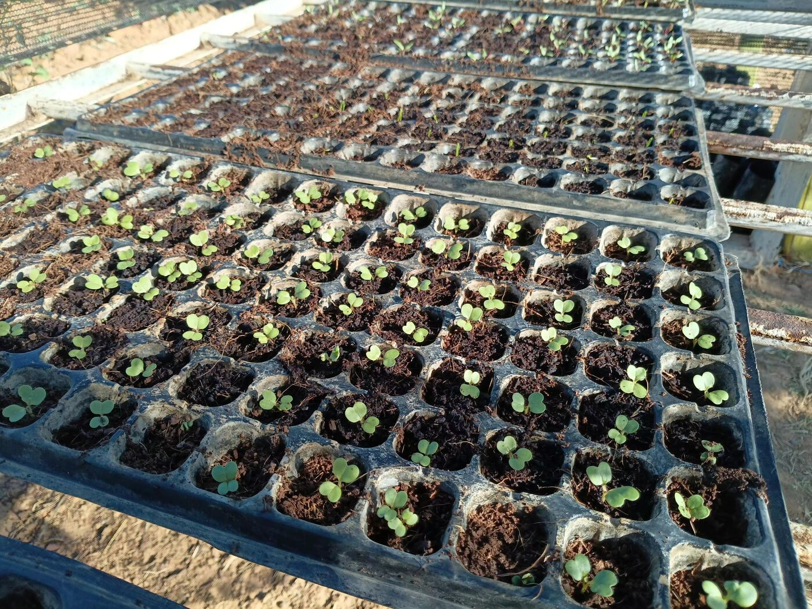

Projects & initiatives
From field to processing to community infrastructure — these are the initiatives Insansu Venture is developing, and looking for partners and funders to build with.
This proposed project would build climate-smart production and agro-processing capacity for indigenous crops across Northern and Luapula Provinces. Smallholder growers would be supported through the production stage, with produce aggregated and processed into two flagship products: peanut butter and composite flours.
The project is designed to demonstrate, at real scale, how indigenous crops can move from field to finished, market-ready nutrition products — while keeping the economic benefit close to the communities that grow them.
Centred on our farm in the Chipongwe area near Kafue, the pilot pairs solar-powered boreholes with two fully separate water lines: safe drinking water for the households, and drip irrigation for the fields. Ten lead farming households will each receive a household tap and an irrigated plot, grow high-value and indigenous vegetables, and sell through Insansu's aggregation shed.
Once the pilot has proven the system, each lead household will mentor neighbouring farmers as the hub grows — so reliable water supports consistent production, season after season.
We are setting up a nursery to raise healthy seedlings for our own fields and for the smallholder growers we work with, including indigenous vegetables alongside cabbage, onion and tomato.
Starting crops from strong seedlings gives growers a more reliable harvest, and it ties directly into our water and irrigation pilot and the wider Insansu value chain.

Also in development
An early-stage agritourism concept, combining the Insansu setting with agritourism experiences for visitors — connecting the story of indigenous crops and climate-smart farming to the people who grow them.
Discuss a partnership